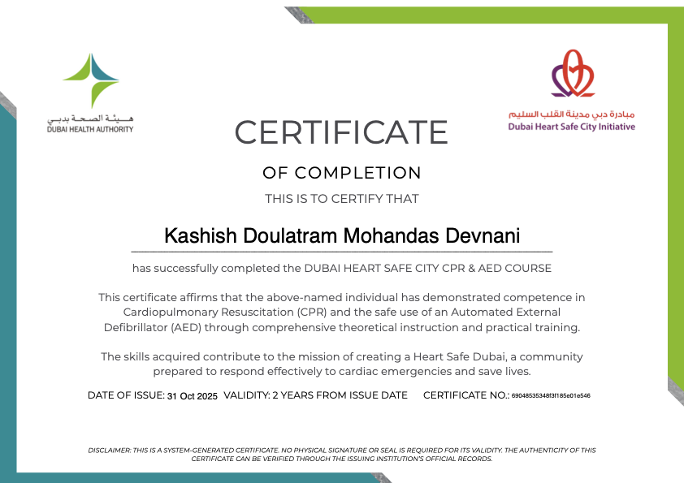

The White Coat Journal
Core Competencies
The framework I return to as I grow into the physician I want to become. Click any competency to explore the experiences shaping it.
01 · Medical Expert
Applies medical knowledge and clinical skills with precision and professional judgment.
02 · Evidence-Based Practitioner & Scholar
03 · Patient Care Provider & Health Advocate
Places patients at the center of care, ensuring their safety, dignity, and well-being while advocating for equitable healthcare access.
04 · Communicator
05 · Collaborator, Innovator & Leader
06 · Professional
07 · Health System Proponent
08 · Self & Profession Enhancer
09 · Socially Accountable
More experiences are being added as I gain them through clinical rotations and beyond. Each reflection deepens my understanding of these competencies and my evolving identity as a physician.
Building foundational clinical competencies through structured learning and procedural practice.
Successfully completed CPR & AED certification through accredited training. This foundational certification equipped me with life support protocols and emergency response competencies essential for any clinician. The training emphasized chest compression technique, airway management, and defibrillation—skills I will need throughout my medical career.

Practiced peripheral IV cannulation under structured supervision at a clinical training facility. This procedural skill demands technical precision, aseptic technique, anatomical knowledge, and patient communication. Through deliberate practice and feedback, I developed muscle memory and improved first-pass success rate. I recognize that continued practice in supervised clinical settings will further refine this competency.
Attended a structured laboratory visit at Thumbay Hospital to strengthen diagnostic reasoning and understand point-of-care testing. Observing laboratory workflows, quality control procedures, and diagnostic algorithms enhanced my understanding of how clinical decision-making integrates with laboratory science. This experience bridged theoretical knowledge with practical application in a real clinical environment.
Immediate: Renew CPR & AED certification annually. Seek supervised opportunities to practice IV cannulation in clinical settings. Volunteer for simulation lab sessions.
Medium-term: Pursue ACLS training in second or third year. Build proficiency through progressive clinical exposure. Document procedural competencies systematically.
Long-term: Maintain procedural competence through deliberate practice. Stay current with evolving clinical guidelines and protocols.
Delivering compassionate, patient-centered care through clinical observation, reflection, and advocacy for patient wellbeing.
Duration: March 2026 | Supervisor: Dr. Prakash Chandwani, Consultant Cardiologist
Completed a comprehensive clinical observership at CKS Hospital in Jaipur under the supervision of Dr. Prakash Chandwani. This immersive experience spanned cardiology ward rounds, ICU rotations, and surgical theatre observations—exposing me to the full continuum of patient care from initial admission through critical care management and operative interventions.
Key Observations:
This observership deepened my understanding that patient care is more than technical competence—it requires presence, empathy, and communication. I observed how Dr. Chandwani balanced authoritative clinical decision-making with patient autonomy, explained complex concepts in accessible language, and acknowledged patient fears without dismissing them.
I also recognized my own hesitation to engage as a pre-clinical student, reflecting uncertainty about my role in the clinical team. Future interactions will involve seeking permission to participate in supervised, low-stakes activities—patient education, chart review, structured interviews—to build confidence and competence progressively.
Immediate: Document communication techniques observed during rounds. Study evidence-based frameworks (SPIKES protocol for difficult conversations, teach-back method for health literacy).
Clinical rotations: Volunteer in patient-facing roles (health screenings, patient education workshops). Practice communication under supervision. Seek feedback from attending physicians and nurses.
Long-term: Integrate compassionate communication as a core professional identity. Continuously reflect on patient interactions. Remain learner-centered and patient-focused.